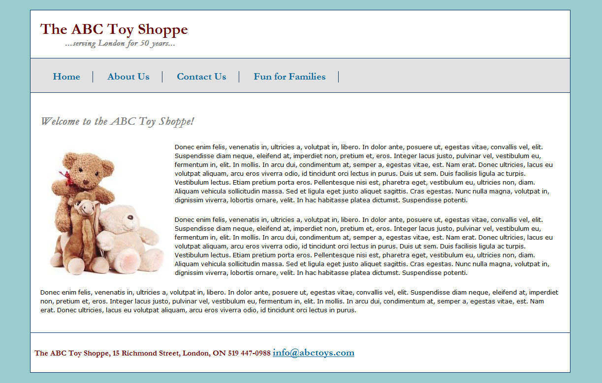
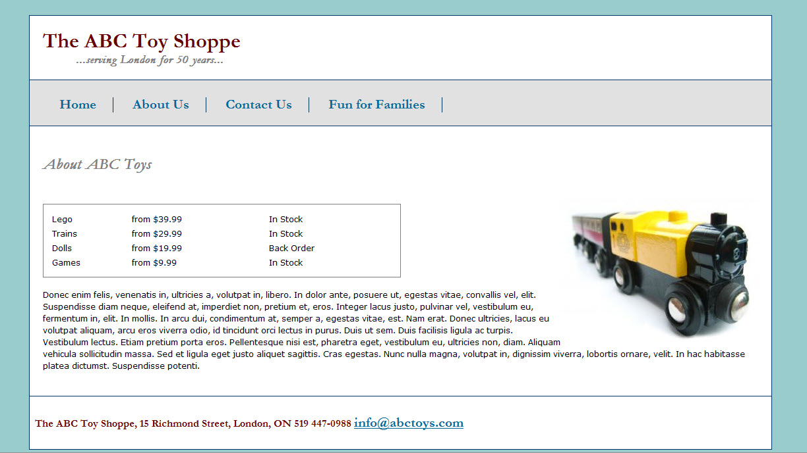

Week 4 Practice
Recreate the following pages - index.html and aboutus.html (I have provided you with the html code)
- Use an external css file for your styles.
- Fonts used include Garamond and Verdana.
- Use the websafe colours link under the content section of FOL to choose the appropriate colours. I used a light blue for the background, a burgundy for some of the headings, then gray and navy for additional headers and links.
- The links in the top navigation change color when the mouse is "hovering" over them. I used the same burgundy colour used in the heading. You will not be able to see the rollover effect in the following screenshots.
- Notice the image on the home page is floated to the left and the image on the aboutus page is floated to the right. We discussed this in class earlier. You could create a .leftpic and a .rightpic class in the stylesheet and add the class attribute to your img tags or you could code the floats inline in the tag using the style attibute. Your choice.
- Use your class notes and any FOL resources
- Any questions....just email!
Remember last week when we talked about centering a layout? We put all the web page content (ie. all our divs) in a wrap div. In the stylesheet we set the left and right margin to auto in the wrap.

